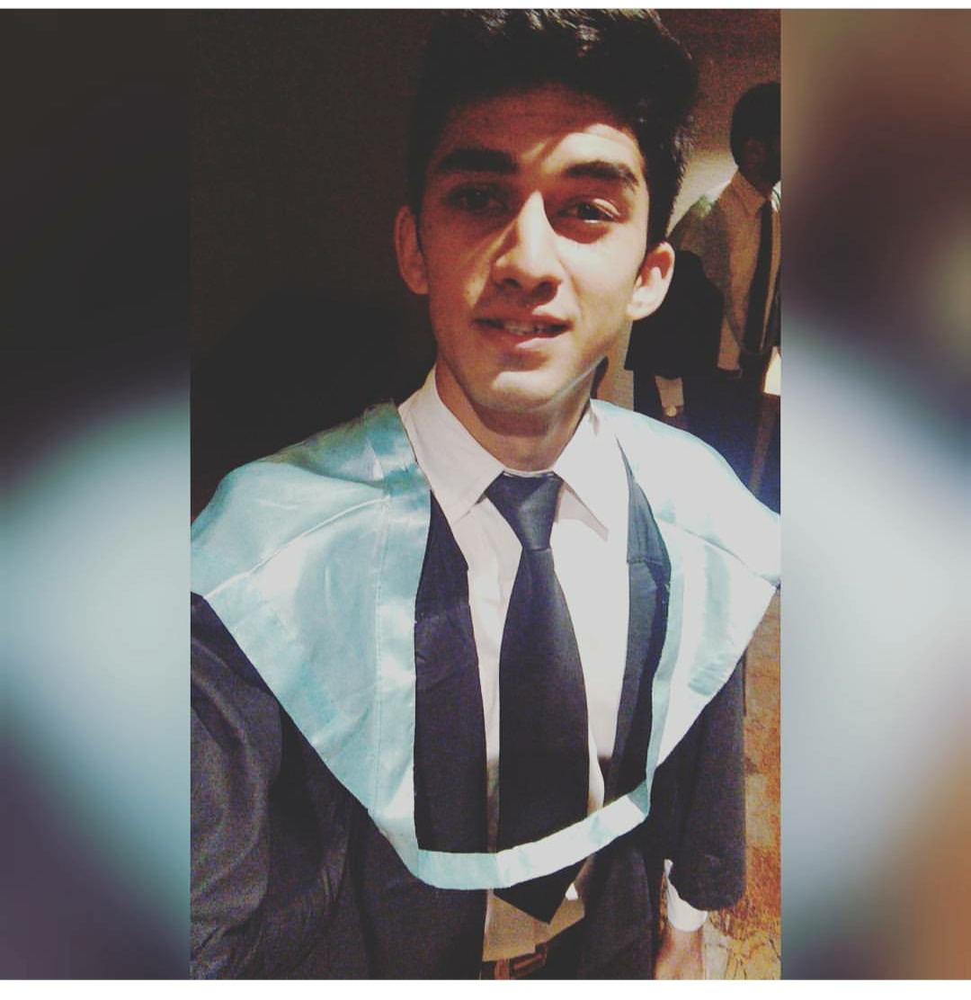

|  |
Rohan WagleTo obtain Professional and technical excellence through sincerity and hard work in professional and caring organisation that provides a promising career progression. To build a long term career and become a better worker.Enhance my skill and proficiency in the field i may qualify and develop career growth as i face greater Challenges. |
| Father's Name | Mr.Avadhut Wagle |
| Date of Birth | 20-11-1995 |
| Nationality | Indian |
| Languages known | English,Hindi,Marathi |
| Name of the Course | Board/University | Year Of Passing | Percentage |
|---|---|---|---|
| TYBA-IHTM | QUEEN MARGARET UNIVERSITY | 2013-2016 | PASSED |
| H.S.C | MAHARASHTRA BOARD | FEB 2012-2013 | 45.00% |
| S.S.C | MAHARASHTRA BOARD | MARCH 2010-2011 | 56.35% |
6 Months Internship from 2nd June 2014 to 13th October 2014 did training in all departments:
| Personal Achivements | Hobbies | Contact Information |